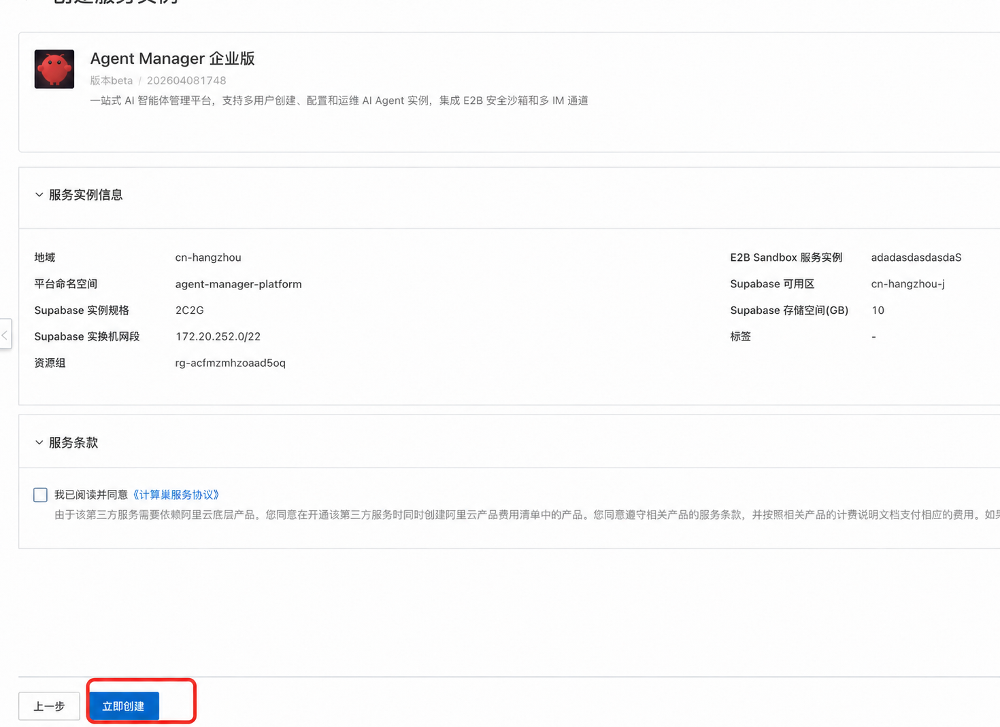

Agent Manager 服务实例部署与计费¶
本页说明如何在阿里云计算巢创建 Agent Manager 服务实例。部署前确认费用、前提条件、权限和参数；部署完成后按本页验证平台地址和管理员入口。
服务说明¶
部署完成后，使用服务实例输出的管理员地址完成初始化。随后配置用户、模型、Agent 类型、沙箱配置和 Token 限流。
用户创建 Agent 实例后，通过实例详情页的“进入工作台”使用 Agent 原生界面。
服务通过计算巢和 ROS 模板部署到已有 ACS/ACK Sandbox 集群中。
部署过程会创建或接入 Supabase，部署 Agent Manager 工作负载、OSS 存储和可选的阿里云 AI 网关。
计费说明¶
Agent Manager 服务实例通过计算巢编排云资源。实际费用以创建服务实例页面和订单确认页面的实时价格为准。
创建服务实例前，重点确认以下费用来源：
| 资源 | 何时产生费用 |
|---|---|
| ACS/ACK Sandbox 集群 | 已有 Sandbox 集群的计算、网络和存储费用。 |
| Supabase | 选择“新建阿里云托管 Supabase”时产生数据库规格、存储和公网 EIP 等费用。 |
| 负载均衡 | Agent Manager 平台公网入口使用的负载均衡资源。 |
| OSS | 备份 OSS 和 SkillHub OSS 中的备份数据、用户 Skill 产生的存储及请求费用。 |
| 阿里云 AI 网关 | 选择“是否配置 AI 网关”为“是”时产生网关规格和公网流量费用。 |
| 日志、监控和网络流量 | 使用日志、监控、公网带宽或 CDT 时按对应产品计费。 |
提交订单前，确认账户余额、资源配额和目标地域库存。使用 RAM 用户部署时，确认 RAM 权限已满足本页要求。
部署架构¶
部署完成后，访问链路如下：
浏览器
-> 平台公网 SLB
-> Agent Manager 前端和 API
-> Supabase / E2B Sandbox / OSS / AI Gateway
Agent 原生界面通过 Agent Manager 的 8080 入口访问。Manager 校验当前登录用户和实例权限后，在服务端代理到 VPC 内的 E2B Sandbox；浏览器无需访问 E2B 域名。
前提条件¶
已准备 Sandbox 集群¶
部署 Agent Manager 前，需要先准备一个 OpenClaw-ACS-Sandbox 集群版服务实例。
部署页面中的 Sandbox 集群 ID 要选择该 Sandbox 所在的 K8s 集群。
已确认网络和交换机¶
如果选择新建阿里云托管 Supabase，请选择集群管控交换机或对应可用区的新交换机。不要选择 OpenClaw 专属交换机。
如果使用已有开源 Supabase，请提前准备浏览器访问 URL、服务端访问 URL、Anon Key、Service Role Key 和数据库连接串。
已准备模型调用方式¶
模型可在部署后配置。需要部署时自动接入阿里云 AI 网关时，提前准备 DashScope API Key、网关规格和网络类型。
如果部署时启用 AI 网关，请提前从百炼控制台获取 DashScope API Key，并确认该 Key 不会写入公开工单、聊天记录或代码仓库。
RAM 权限¶
创建服务实例的 RAM 用户或角色，必须具备计算巢服务实例创建权限，以及模板涉及的 ROS、CS、VPC、ECS、OSS 和可选 AI 网关资源的操作权限。具体权限以计算巢创建页的校验结果为准。
| 权限范围 | 用途 |
|---|---|
| 计算巢、ROS | 创建和更新服务实例及资源栈。 |
| CS、VPC、ECS | 选择集群、VPC、交换机，并创建模板需要的网络资源。 |
| OSS | 创建或使用备份 OSS，并访问用于存储用户 Skill 的 SkillHub OSS。 |
| APIG、日志、监控 | 仅在启用阿里云 AI 网关或相关监控能力时需要。 |
模板中的“阿里云访问凭证来源”用于平台访问 OSS、SkillHub、AI 网关等资源，不等同于创建服务实例的 RAM 用户权限。选择“使用已有 AccessKey”时，按页面显示的“已有 AccessKey 权限策略参考”给对应 RAM 用户或角色授权。不要直接把 AccessKey 写入文档、代码仓库或聊天记录。
部署流程¶
步骤一：进入服务实例创建页¶
- 登录阿里云计算巢控制台。
- 搜索并打开“Agent Manager”服务。
- 单击开始部署或正式创建，进入创建服务实例页面。
也可以在服务目录中搜索 Agent Manager。服务卡片提供详情页、部署文档和服务实例创建入口。
步骤二：填写前置确认¶
阅读白名单配置确认说明，并勾选确认框。实例升级和 Skill 挂载依赖 Agent Sandbox 共享存储；启用前确认已评估特权容器和 hostPath 带来的安全责任。
步骤三：填写 Sandbox 配置¶
- 在
Sandbox 集群 ID（ClusterId）中选择已有 ACS Sandbox 所在 K8s 集群。 - 在
K8s 命名空间（PlatformNamespaceName）中填写平台命名空间，默认是openclaw-platform。
没有可选集群时，先创建 OpenClaw-ACS-Sandbox 集群版服务实例。
步骤四：填写 Supabase 配置¶
在 Supabase 来源（SupabaseDeploymentMode）中，生产环境推荐选择 CreateNew（新建阿里云托管 Supabase）。
选择 UseExistingOpenSource（使用已有开源 Supabase）时，填写已有 Supabase 的公网 URL、服务端访问 URL、Anon Key、Service Role Key 和数据库连接串。此模式适用于兼容性验证、迁移或测试，不建议用于生产环境。
数据库连接串中的密码如果包含 @、#、% 等特殊字符，先做 URL 编码。
选择 Supabase 所在可用区（ZoneId）、VPC（VpcId）和交换机（VSwitchId）。
如果选择新建阿里云托管 Supabase，请使用集群管控交换机或对应可用区的普通交换机，不要选择 OpenClaw 专属交换机。
步骤五：填写 OSS、SkillHub、AI 网关和访问凭证¶
- 在
选择已有/新建的OSS存储桶（OssOption）中选择新建或复用备份 OSS Bucket。 - 确认
SkillHub OSS 配置（SkillHubConfig）已自动加载。该 OSS 用于存储用户 Skill。 - 如果要在部署时启用阿里云 AI 网关，把
是否配置 AI 网关（EnableAIGateway）设为Yes，填写 DashScope API Key，并选择网关规格和网络访问类型。 - 在
阿里云访问凭证来源（AccessKeyMode）中选择自动创建 AccessKey 或使用已有 AccessKey。
步骤六：确认订单并创建¶
- 检查右侧参数完成度和询价明细。
- 单击下一步：确认订单。
- 勾选计算巢服务协议。
- 单击立即创建。
部署通常需要 5 到 10 分钟。部署期间，在服务实例详情页查看状态、资源和部署日志。

常见部署问题¶
| 现象 | 处理方式 |
|---|---|
| 提示网段冲突 | 检查 Supabase 交换机网段是否与 VPC 已有网段重叠，更换不冲突的交换机。 |
| 部署长时间未完成 | 在计算巢服务实例详情页查看部署事件和日志；Supabase 创建可能需要更长时间。 |
| 平台页面无法访问 | 等待 ALB/Ingress 就绪后重试，并检查集群中的 Ingress 资源。 |
| 登录后提示数据库连接失败 | 等待 Supabase 进入运行中，确认 URL、Service Role Key 和数据库连接串属于同一个实例。 |
| 开源 Supabase 的 Site URL 或邮箱认证保存返回 501 | 使用 用户、登录和分组管理 中的 kubectl set env 方式配置 GoTrue。 |
GlobalTrafficPolicy 网络策略¶
如果集群使用 GlobalTrafficPolicy 对 Agent Pod 做网络隔离，必须确认 spec.selector.matchLabels 能匹配 SandboxSet 创建的 Pod。新增 Agent 类型或修改 SandboxSet 标签后，需要重新检查 selector。
kubectl edit globaltrafficpolicy openclaw-global-policy
例如，策略需要匹配 OpenClaw Pod 时：
spec:
selector:
matchLabels:
app: agent-manager-openclaw
相同网络规则可以扩展现有 selector；不同网络规则应新建独立的 GlobalTrafficPolicy。策略生效后，验证 Agent Manager 和 Sandbox 之间的必要链路仍然可达。
部署参数说明¶
前置确认¶
| 参数 | 模板字段 | 默认值 | 说明 |
|---|---|---|---|
| 白名单配置确认 | WhitelistConfirmation |
未勾选 | 确认已阅读 Agent Sandbox 共享存储、特权容器和 hostPath 相关说明。必须勾选后才能部署。 |
Sandbox 配置¶
| 参数 | 模板字段 | 默认值 | 说明 |
|---|---|---|---|
| Sandbox 集群 ID | ClusterId |
无 | 选择已有 ACS Sandbox 所在的 K8s 集群。 |
| K8s 命名空间 | PlatformNamespaceName |
openclaw-platform |
Agent Manager 平台资源所在命名空间。 |
Supabase 配置¶
| 参数 | 模板字段 | 默认值 | 说明 |
|---|---|---|---|
| Supabase 来源 | SupabaseDeploymentMode |
CreateNew |
生产环境使用托管 Supabase。已有开源 Supabase 仅用于兼容、迁移或测试。 |
| Supabase 实例规格 | SupabaseProjectSpec |
2C2G |
新建托管 Supabase 时填写。 |
| Supabase 存储空间(GB) | SupabaseStorageSize |
10 |
新建托管 Supabase 时填写，最小值为 1 GB。 |
| 已有 Supabase 公网 URL | ExistingSupabaseUrl |
空 | 使用已有开源 Supabase 时填写，供浏览器访问，不要以 / 结尾。 |
| 已有 Supabase 服务端访问 URL | ExistingSupabaseInternalUrl |
空 | 使用已有开源 Supabase 时填写，供后端访问。相同集群内可填写 K8s Service 地址。 |
| 已有 Supabase Anon Key | ExistingSupabaseAnonKey |
空 | 使用已有开源 Supabase 时填写，供前端调用 Auth/REST API。 |
| 已有 Supabase Service Role Key | ExistingSupabaseServiceRoleKey |
空 | 使用已有开源 Supabase 时填写，仅服务端使用。 |
| 已有 Supabase 数据库连接串 | ExistingSupabaseDatabaseUrl |
空 | 使用已有开源 Supabase 时填写，用于初始化表结构和管理员账号。 |
| Supabase 可用区 | ZoneId |
空 | 新建托管 Supabase 时选择。 |
| 专有网络 VPC 实例 ID | VpcId |
空 | 新建托管 Supabase 时选择，通常与 Sandbox 集群在同一 VPC。 |
| 交换机实例 ID | VSwitchId |
空 | 新建托管 Supabase 时选择。不要选择 OpenClaw 专属交换机。 |
OSS 存储配置¶
| 参数 | 模板字段 | 默认值 | 说明 |
|---|---|---|---|
| 选择已有/新建的 OSS 存储桶 | OssOption |
NewOSS |
存储 Agent 备份数据。 |
| OSS 存储桶名称 | ExistingBucketName |
空 | 选择已有 OSS Bucket 时必填。 |
SkillHub OSS 配置¶
| 参数 | 模板字段 | 默认值 | 说明 |
|---|---|---|---|
| SkillHub OSS 配置 | SkillHubConfig |
自动获取 | 自动加载用于存储用户 Skill 的 SkillHub OSS。 |
AI 网关配置¶
| 参数 | 模板字段 | 默认值 | 说明 |
|---|---|---|---|
| 是否配置 AI 网关 | EnableAIGateway |
No |
选择 Yes 会自动创建阿里云 AI 网关和百炼模型代理。 |
| DashScope API Key | DashScopeApiKey |
空 | 启用 AI 网关时填写，从百炼控制台获取。 |
| AI 网关规格 | AIGatewaySpec |
aigw.small.x1 |
规格越高，支持的并发请求越多。 |
| AI 网关网络访问类型 | AIGatewayNetworkType |
InternetAndIntranet |
可选择公网、内网或公网+内网。公网访问会产生公网流量费用。 |
云资源访问凭证¶
| 参数 | 模板字段 | 默认值 | 说明 |
|---|---|---|---|
| 阿里云访问凭证来源 | AccessKeyMode |
AutoCreate |
用于平台访问 OSS、AI 网关等云资源。 |
| 已有 AccessKey 权限策略参考 | ExistingAccessKeyRequiredPolicy |
自动展示 | 选择已有 AccessKey 时按此策略授权。 |
| 已有 AccessKey ID | ExistingAccessKeyId |
空 | 选择已有 AccessKey 时填写。 |
| 已有 AccessKey Secret | ExistingAccessKeySecret |
空 | 选择已有 AccessKey 时填写。 |
验证结果¶
查看服务实例状态¶
- 打开计算巢控制台。
- 进入服务实例管理。
- 找到 Agent Manager 服务实例。
- 确认状态为已部署。
状态长时间停留在部署中时，先查看服务实例详情页的部署日志。
获取平台访问地址¶
部署完成后，在服务实例输出中查看以下地址：
| 输出项 | 用途 |
|---|---|
平台公网访问地址（PlatformUrl） |
打开 Agent Manager 平台首页。 |
管理员登录地址（AdminLoginUrl） |
进入管理员登录页。 |
API 健康检查（ApiHealthUrl） |
检查后端 API 是否正常。 |
OAuth App 回调地址（SupabaseOAuthCallbackUrl） |
配置 OAuth Provider 时使用。 |
SAML SP Metadata 地址（SupabaseSamlMetadataUrl） |
配置 SAML 身份提供商时使用。 |
SAML ACS 地址（SupabaseSamlAcsUrl） |
配置 SAML 身份提供商时使用。 |
打开 API 健康检查 地址。如果返回健康状态，说明平台 API 已启动。
获取初始管理员账号¶
服务实例输出中包含初始管理员信息：
| 输出项 | 默认值 |
|---|---|
| 管理员邮箱 | admin@openclaw.local |
| 管理员密码 | admin123 |
首次登录后请立即修改管理员密码。
后续步骤¶
- 完成首次登录、分组管理和第一个实例创建：阅读 用户、登录和分组管理 和 创建和管理 Agent 实例。
- 配置 Agent 类型、沙箱和模型网关：阅读 配置 Agent 类型、配置沙箱（SandboxSet） 和 配置网关。
- 配置 Agent 实例备份：阅读 Agent 备份。
- 配置已运行 Agent 的沙箱升级：阅读 Agent 升级。
- 遇到部署或访问问题：阅读 常见问题与排障。